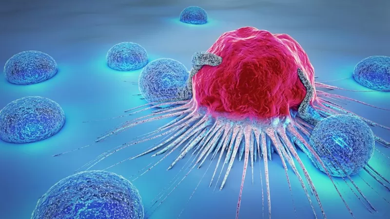

ai 기술을 활용하여 암 패턴을 예측해 치료하는 기술을 개발하고 있다. 연구팀은 이번 연구를 통해 자신들이 환자들의 데이터를 종합해 종양에 대한 지식을 터득하고 적용하는 기계 학습 기술을 개발했다고 밝혔다. AI에 기반한 새로운 접근법은 장래에 종양이 어떻게 진화하는지를 미리 구체적으로 예측해 환자 개개인에게 맞는 맞춤형 치료도 가능하게 해줄 것으로 보입니다. 현재 루닛 스코프를 이용해서 환자의 암세포를 분석한 결과 세 가지 면역학적 형질(3-IP;활성,제외,결핍)로 분류하는 데 까지 성공했다.
루닛 스코프란?(링크)